BASC0005 Quantitative Methods 2: Data Science and Visualisation
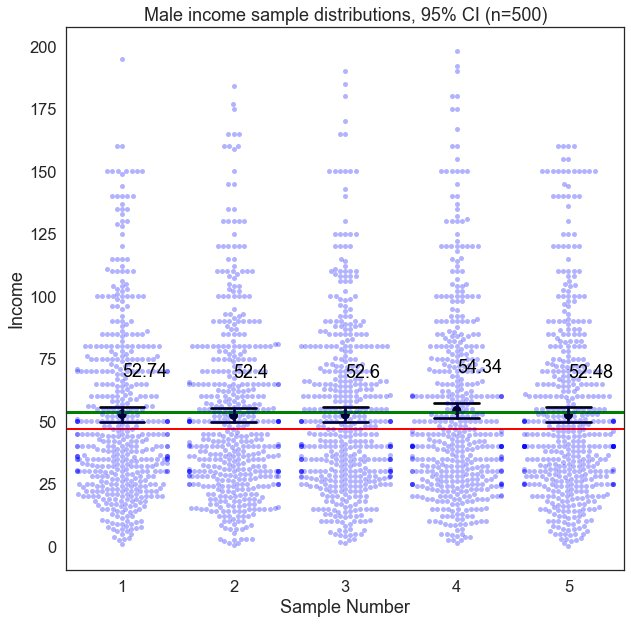
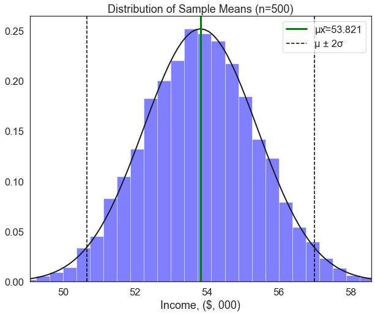
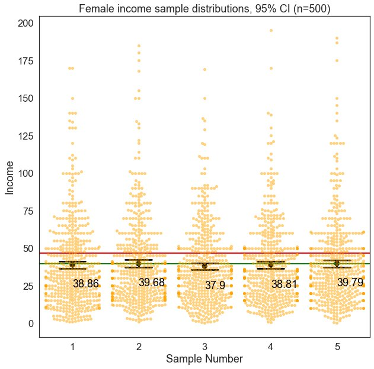
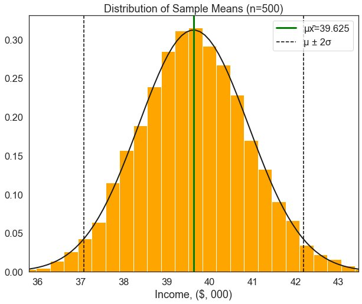
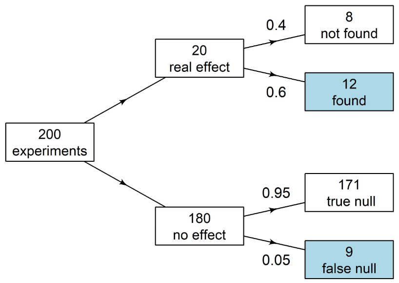
Source: Adrian Barnett
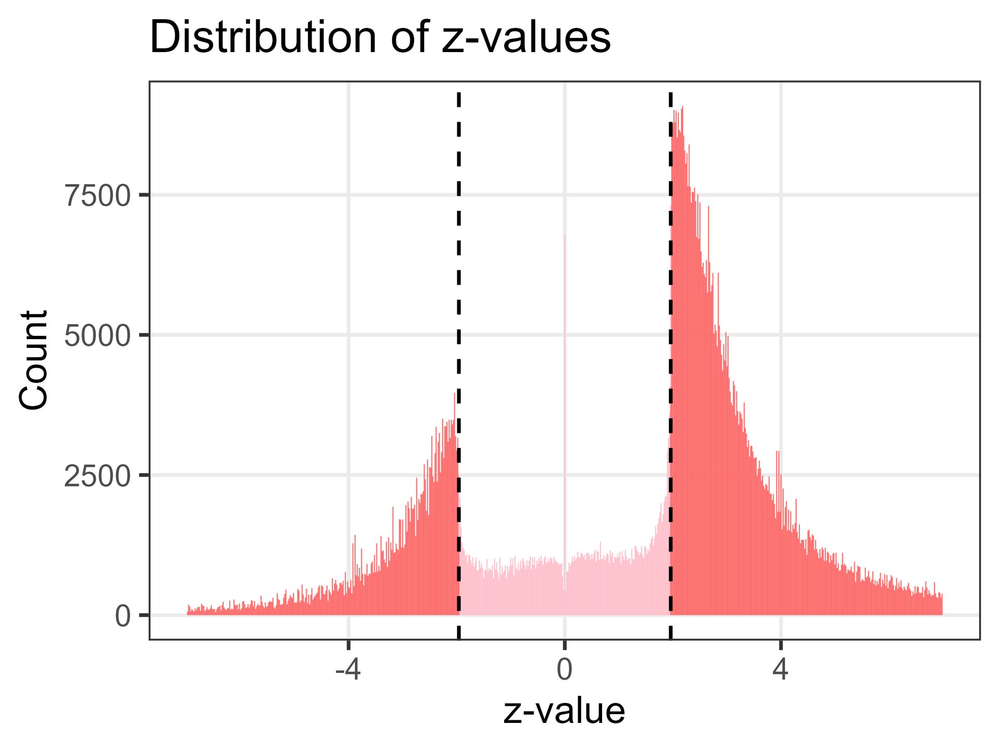
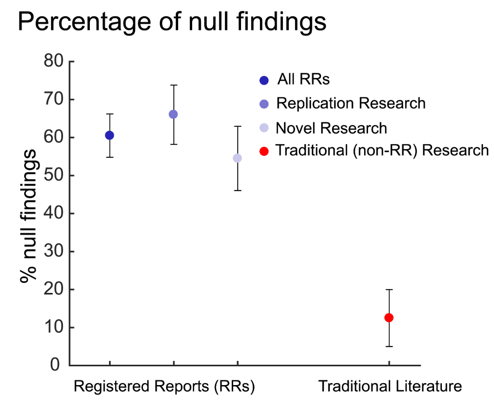
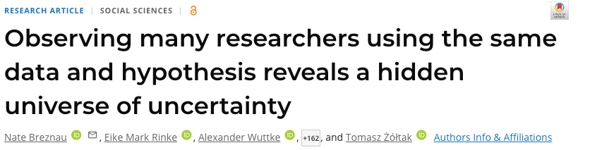
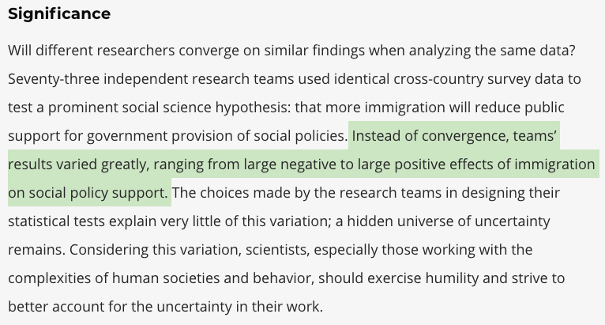
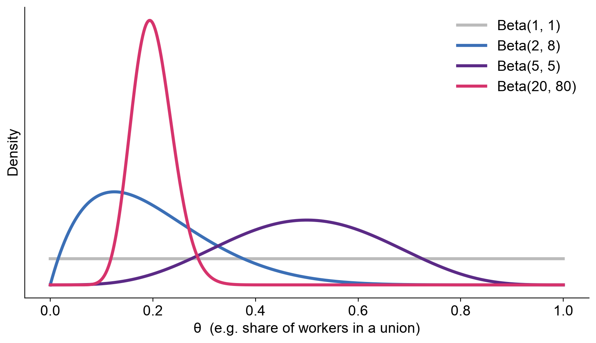
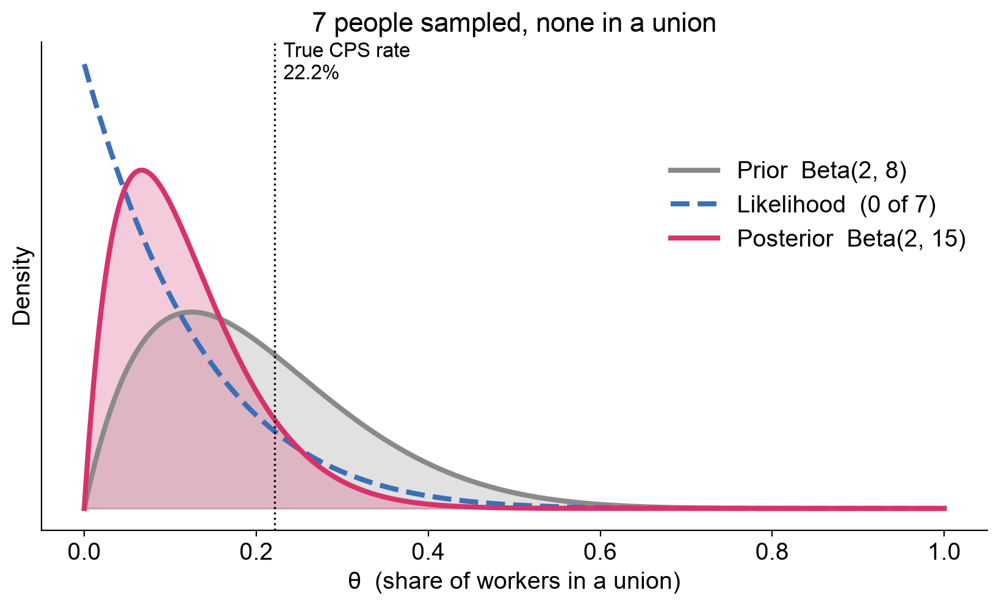
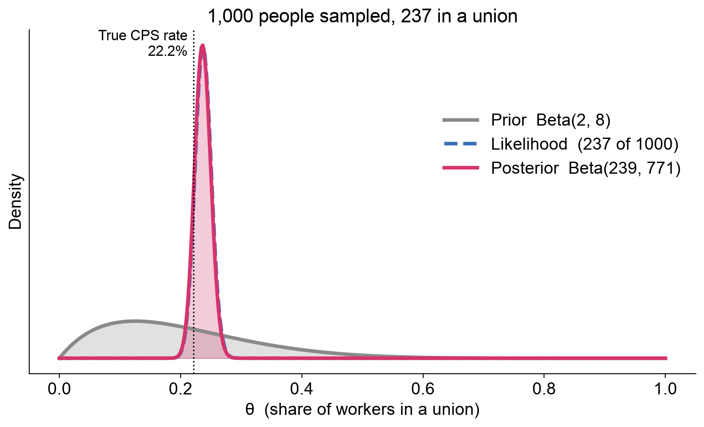
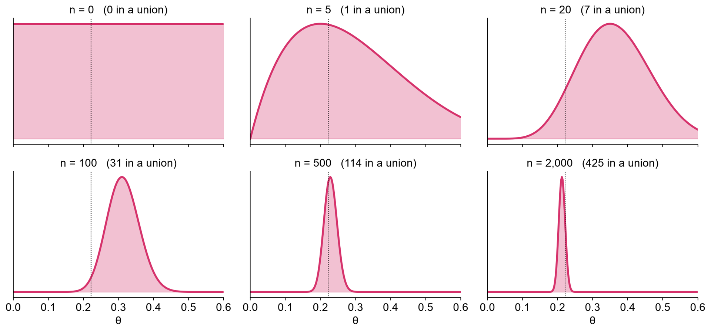
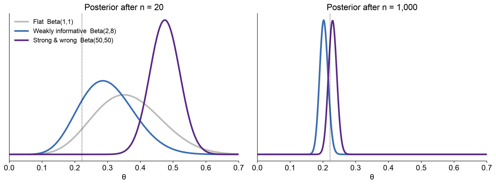
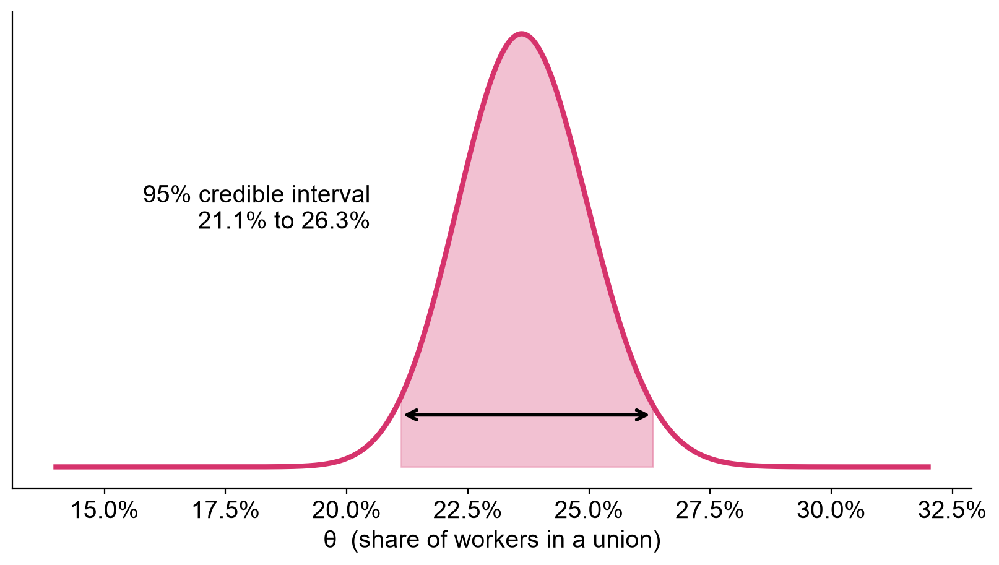
| 95% Confidence interval | 95% Credible interval | |
|---|---|---|
| θ is… | A fixed, unknown number | A random variable with a distribution |
| Randomness comes from | The sampling process | Our uncertainty about θ |
| Correct interpretation | If we repeated the study many times, 95% of intervals would contain θ | Given the data and prior, there’s a 95% probability θ is in this interval |
| Needs a prior? | No | Yes |
| With lots of data and a flat prior | Nearly identical numbers | Nearly identical numbers |
| Frequentist | Bayesian | |
|---|---|---|
| Probability means | Long-run frequency of events | Degree of belief |
| Parameters (θ) are | Fixed but unknown | Uncertain, with a distribution |
| Prior knowledge | Not formally used | Encoded in the prior |
| Main output | Point estimate, p-value, confidence interval | Posterior distribution |
| Answers | P(data | hypothesis) | P(hypothesis | data) |
| Main criticism | Answers a question nobody asked | Priors are subjective |
| Computation | Usually fast, closed-form | Often needs MCMC |
BASC0005 Quantitative Methods 2